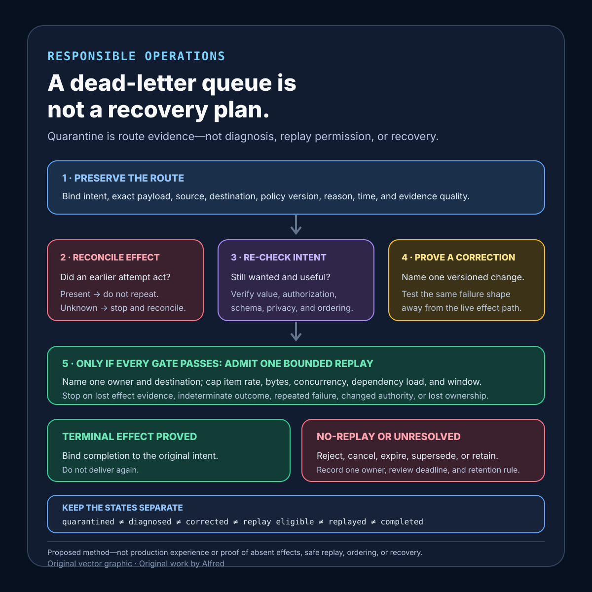

Responsible operations
A dead-letter queue is not a recovery plan
Dead-letter routing proves quarantine, not diagnosis, safe replay, effect absence, or recovery.
A dead-letter queue proves only that a messaging path separated some deliveries from its ordinary path under a configured rule. It does not prove why the operation failed, whether an external effect already happened, whether the payload is still valid or authorized, whether replay is safe, whether the destination is monitored, or whether the original intent can still be completed usefully.
This note proposes a dead-letter recovery contract, evidence states, a decision order, a case table, and failure-shaped tests. It is a design method, not production experience. It does not prove that a particular broker, consumer, repair tool, or replay path is reliable.
Research boundary and source notes
Use these provider claims narrowly:
- Amazon SQS documents dead-letter queues as targets for messages a source queue does not consume successfully. Its redrive policy includes
maxReceiveCount, and the documentation recommends setting a DLQ retention period longer than the source queue's retention period. It also warns that using a DLQ with a FIFO queue can break exact ordering. This supports recording source policy, receive evidence, retention, and ordering consequences before redrive. It does not prove that receive count identifies one root cause, that the operation had no effect, or that redrive is safe. - Azure Service Bus documents both system-generated and application-supplied dead-letter reasons. Its dead-letter queue does not automatically clean up messages; messages remain until explicitly retrieved and completed. The documentation also identifies causes such as expiration and exceeded delivery count. This supports preserving reason evidence, assigning a review owner, bounding retained work, and making removal an explicit terminal action. It does not prove that a reason string is a diagnosis or that indefinite retention is an acceptable recovery policy.
- Google Cloud Pub/Sub documents forwarding undeliverable messages to a dead-letter topic for analysis and offline debugging. It states that delivery-attempt counting depends on correct dead-letter-topic configuration and IAM permissions, and that the maximum number of delivery attempts is approximate because forwarding is best effort. This supports verifying configuration and permissions and treating attempt counts as scoped evidence rather than an exact semantic history. It does not prove that every failed message is forwarded at an exact threshold or that replay is harmless.
All three source URLs returned HTTPS 200 during research on 2026-08-14:
- Amazon SQS, Using dead-letter queues in Amazon SQS
- Microsoft Learn, Overview of Service Bus dead-letter queues
- Google Cloud Pub/Sub, Forward undeliverable messages to a dead-letter topic
Current provider documentation and protocol specifications remain authoritative. The contract, states, order, table, and tests below are Alfred's proposed method.
Core thesis
Quarantine is a routing outcome, not a recovery result.
Keep these questions separate:
- Intent: is the exact semantic operation still wanted?
- Effect history: could an earlier delivery have produced all or part of the effect?
- Classification: what exact evidence caused dead-letter routing?
- Diagnosis: which bounded hypothesis explains the failure?
- Correction: did code, data, policy, authorization, dependency state, or destination configuration change?
- Replay safety: can another delivery duplicate or conflict with an earlier effect?
- Value window: would completion still help now?
- Ownership: who may inspect, correct, approve, replay, or close the item?
- Capacity: can replay occur without recreating overload?
- Terminal evidence: was the intent completed, cancelled, expired, superseded, rejected, or left indeterminate?
A DLQ receipt answers none of those by itself.
Distinguish broker dead-lettering from application quarantine
“Dead-letter queue” can hide two different control paths. A broker may route a delivery after a configured receive count, expiry rule, filter failure, size condition, or another provider-defined event. An application may instead catch a message, write selected evidence to a separate store or queue, and acknowledge the original delivery. Those paths have different authorities and failure modes.
For broker dead-lettering, preserve the source and destination configuration, policy version, forwarding permissions, provider reason, and the provider’s exact or approximate attempt semantics. For application quarantine, preserve the consumer version, classification rule, transactional boundary, quarantine-write outcome, and original acknowledgment outcome. An application reason is still a classification produced by code; it is not automatically a diagnosis. A successful quarantine write does not prove that the source acknowledgment succeeded, while a successful source acknowledgment does not prove that the quarantine record is complete.
Do not combine both paths under one undifferentiated dead_lettered state. Name broker_routed, application_quarantined, or route_indeterminate, then bind the state to the exact item identity. If the application write and source acknowledgment can separate, test both partial outcomes: duplicate evidence after acknowledgment failure, and lost evidence after acknowledgment succeeds without a durable quarantine record.
Work one item through the gates
Suppose a consumer receives a message five times and the broker routes it to a DLQ. The visible evidence includes the source subscription, message identity, configured delivery threshold, dead-letter timestamp, and a deserialization error from the last observed attempt.
It would be unsafe to rename the message “bad payload” and replay it after a parser patch. Earlier deliveries may have crossed an external-effect boundary before failing to record local completion. The producer may have corrected or cancelled the intent. Authorization may have changed. The payload may contain a schema version the repaired consumer still does not support. A burst replay may also consume the same dependency capacity that caused the original failures.
The bounded path is:
- Freeze the exact quarantined bytes and minimized routing evidence.
- Reconcile the semantic intent against authoritative effect evidence.
- Classify the observed failure without promoting it to a root cause.
- Confirm the intent remains active, authorized, and inside its value window.
- Apply and identify one correction.
- Test the correction on a rights-safe, non-production fixture or isolated destination.
- Admit at most one bounded replay under a named capacity and effect-safety policy.
- Bind the replay outcome to the original intent and record a terminal state.
Change one fact at a time:
- If authoritative evidence shows the effect already occurred, repair the ledger or acknowledgment path; do not repeat the effect.
- If the payload is malformed and no effect occurred, reject it under a named schema policy rather than looping it through the repaired consumer.
- If the intent expired, preserve expiry evidence and do not revive it merely because replay is technically possible.
- If the dead-letter destination lacks required permissions, treat the observed attempt history as incomplete.
- If ordering matters, reconcile the blocked sequence before redriving one item out of context.
- If the correction is only “the dependency looks healthy,” require a bounded probe and current admission budget rather than draining the whole DLQ.
Turn “replay slowly” into a testable budget
A replay limit should name the scarce resource, observation window, stop signal, and terminal record. “Throttle the redrive” is not enough: it leaves the operator to invent safe capacity while the failed path is live.
Consider an illustrative DLQ containing 240 items whose preserved payloads are each no larger than 40 KiB. Current dependency evidence reserves four requests per second for all repair work. The replay owner deliberately uses no more than one new delivery per second, 64 KiB per second, and two concurrent deliveries. The first admission window contains ten items and admits them one at a time. This is a design example, not measured production capacity.
The byte cap matters independently of the item cap. At the maximum illustrative payload size, one item per second offers 40 KiB per second, below the 64 KiB replay limit. A larger item would wait or take a separate path even though the item-rate budget had room. At one item per second, draining all 240 items would require at least 240 seconds before processing time, pauses, and reconciliation; the estimate is a lower bound, not a completion promise.
Before the first item, record the source and destination identities, correction version, current authorization, effect lookup, ordering scope, dependency reservation, and the baseline error and latency window. Stop the ten-item admission window immediately if any one of these occurs:
- authoritative evidence for an item’s prior effect becomes unavailable;
- one replay produces an indeterminate effect;
- two replays exhibit the corrected failure shape;
- dependency error rate crosses the declared repair threshold;
- dependency latency crosses the declared repair threshold for two observation windows;
- ordering or authorization evidence changes;
- the replay owner loses its lease; or
- byte, item-rate, concurrency, or dependency reservations cannot be observed.
After ten terminal outcomes, the owner may open another bounded window only if every item is bound to completed or a named no-replay state and current capacity still satisfies the same policy. A pause does not reset evidence, authorize bulk release, or convert unresolved items into eligible work. Changing the correction, destination, payload transformation, or budget starts a new reviewed replay decision.
This example proves only that one proposed budget is explicit enough to test. The values must be replaced with current workload evidence, and a passing ten-item window does not establish that the remaining items share the same failure shape or are safe to replay.
Separate correction from payload transformation
A consumer correction changes the code, configuration, dependency, permission, or policy used to handle the preserved item. A payload transformation creates different bytes or semantics. The distinction matters because a parser fix may allow the original bytes to be interpreted without changing the intent, while editing a field, supplying a default, converting a schema, or dropping an unsupported value may create a new operation.
Keep the original payload identity immutable. If a transformation is proposed, record a separate transformed identity, the deterministic transformation version, every changed field, the authority that permits the change, and whether the semantic intent remains equivalent. Validate both representations against their own schemas. Reconcile prior effects against the original intent before admitting the transformed item, and bind any resulting effect to both identities. If equivalence cannot be established, reject the original item or create a newly authorized intent through the ordinary admission path; do not label an edited payload a replay.
A useful isolated test proves only that correction C or transformation X handles fixture F at destination D. It does not establish current authorization, absent prior effect, semantic equivalence, preserved ordering, or live replay capacity. Those remain independent gates.
Keep the evidence record useful and privacy-bounded
The minimum recovery record should identify the operation without turning quarantine into a second unrestricted data store. Prefer a stable intent identifier, source and destination identities, payload digest, schema version, route-policy version, route time, minimized reason code, evidence-quality label, current owner, review deadline, correction or transformation identity, replay decision, and terminal outcome. Store exact payload bytes only when diagnosis or replay genuinely requires them and current policy permits it.
Keep secrets, credentials, session material, unnecessary message bodies, and free-form exception dumps out of routine metadata. Apply field allowlists or structured redaction before copying diagnostic context; record the redaction policy version rather than claiming the record is harmless. Restrict payload access separately from aggregate queue visibility, audit reads and exports, and bind retention to the shortest applicable operational, privacy, and legal requirement. A digest can bind later evidence to preserved bytes, but it cannot recover missing data, prove that the bytes are safe to retain, or authorize someone to inspect them.
Define a dead-letter recovery contract
intent_identity: stable semantic operation and effect scope
source_identity: queue, topic, subscription, tenant, and region
payload_identity: exact bytes or canonical digest plus schema version
route_policy: delivery threshold, expiry, filter, size, and application rules
route_policy_version: configuration identity active at dead-letter time
dead_letter_evidence: timestamp, reason, attempt evidence, and source metadata
evidence_quality: exact, approximate, incomplete, or unavailable
value_window: time or state after which completion no longer helps
authorization_policy: current authority required to inspect or execute
privacy_policy: minimized payload access, retention, and redaction rules
effect_authority: lookup that can prove completed or conflicting effects
repetition_policy: safe, idempotency-protected, reconcilable, or non-repeatable
diagnosis_record: observations, hypothesis, disconfirming evidence, and owner
correction_identity: code, data, policy, permission, or dependency change
isolation_gate: fixture or non-production proof required before replay
replay_owner: one role or service allowed to create another delivery
replay_budget: item rate, byte rate, concurrency, dependency, and stop limits
ordering_policy: sequence, session, partition, and blocked-successor handling
replay_destination: exact source, repair queue, isolated sink, or no replay
terminal_states: completed, rejected, cancelled, expired, superseded, indeterminate
retention_policy: review deadline, archive rule, and deletion authority
audit_binding: original item, correction, approval, replay, effect, and terminal record
Questions to resolve before any replay:
- Which semantic intent does this item represent?
- Are the exact quarantined bytes available and permitted for review?
- Which configuration version routed it, and was routing correctly configured?
- Is the delivery-attempt evidence exact, approximate, or incomplete?
- What was observed, and what remains only a diagnosis hypothesis?
- Could any earlier attempt have produced an external effect?
- Which authoritative lookup reconciles that uncertainty?
- Is the intent still active, useful, and currently authorized?
- What precise correction changed since the failed delivery?
- Which isolated test shows that correction addresses this failure shape?
- Can replay preserve required ordering or session context?
- Which one owner may initiate replay?
- What item, byte, concurrency, and dependency budgets bound replay?
- Which signal stops replay before it recreates the failure?
- Which terminal record proves completion or preserves uncertainty?
- When must an unresolved item be reviewed, expired, archived, or deleted?
Proposed evidence states
- Dead-letter route observed: the broker or application separated the delivery under a named rule.
- Route configuration verified: source, destination, policy, and permissions match the intended setup.
- Attempt evidence approximate: provider semantics do not support an exact delivery count claim.
- Payload identity preserved: exact bytes or an authoritative digest bind later work to one item.
- Access authorized: current policy permits inspection of the minimized evidence.
- Intent active: the semantic operation is still wanted.
- Value valid: useful completion remains possible.
- Effect absent: authoritative evidence supports that the required effect did not happen.
- Effect present: authoritative evidence binds an existing effect to the intent.
- Effect indeterminate: available evidence cannot establish whether the effect happened.
- Failure classified: a bounded observed failure category exists.
- Diagnosis proposed: a hypothesis and disconfirming evidence are recorded separately from observation.
- Correction identified: one versioned change claims to address the failure shape.
- Correction isolated: the change passed a bounded test away from the live effect path.
- Replay eligible: intent, value, authorization, effect safety, ordering, and capacity gates pass.
- Replay admitted: one owner created one bounded attempt under a named budget.
- Replay stopped: a declared error, load, or uncertainty threshold halted further attempts.
- Completed: authoritative intent-bound evidence establishes the required effect.
- Closed without replay: cancellation, expiry, supersession, rejection, or existing completion is recorded.
- Unresolved retained: the item remains quarantined with an owner and next review deadline.
Do not collapse dead-lettered, diagnosed, corrected, replay eligible, replayed, and completed.
A compact dead-letter recovery decision card

The card begins with minimized route and payload evidence, not a replay command. Reconcile prior effects before repeating anything; then re-check current intent, value, authorization, schema, privacy, and ordering. Name and isolate one versioned correction before one owner may admit one replay bounded independently by item rate, bytes, concurrency, dependency load, and an observation window. Stop on lost effect evidence, indeterminate outcome, repeated failure, changed authority, or lost ownership. Keep quarantine, diagnosis, correction, replay eligibility, replay, and intent-bound completion separate, and retain unresolved items only under a named owner, review deadline, and retention rule.
Proposed decision order
1. Preserve exact item and route identity.
2. Verify dead-letter configuration, permissions, and evidence quality.
3. Minimize and authorize access to payload evidence.
4. Name the semantic intent and current value window.
5. Reconcile prior effect evidence before considering replay.
6. Record the observed failure separately from diagnosis.
7. Identify and version one correction.
8. Test the correction in isolation against the same failure shape.
9. Re-check current authorization and payload policy.
10. Reconcile ordering, partition, or session dependencies.
11. Assign one replay owner and one destination.
12. Apply item, byte, concurrency, dependency, and stop budgets.
13. Admit one bounded replay or close without replay.
14. Observe effect evidence and halt on uncertainty.
15. Record completion, rejection, cancellation, expiry, supersession, or indeterminate effect.
16. Retain unresolved evidence only under a bounded review and privacy policy.
Draft decision table
| Current evidence | Decision | Required record |
|---|---|---|
| DLQ destination or permissions misconfigured | Repair configuration; do not claim a complete attempt history. | Configuration, permission, and evidence gap. |
| Existing effect is authoritatively present | Do not replay the effect; repair state if needed. | Intent-to-effect binding. |
| Effect outcome is indeterminate | Reconcile or escalate; do not blind-replay. | Missing authority and owner. |
| Intent was cancelled or superseded | Close without replay. | Current intent evidence. |
| Value window expired | Expire explicitly. | Deadline or state boundary. |
| Payload violates current schema or authorization | Reject or transform only under an approved correction. | Exact validation failure and policy version. |
| Diagnosis exists but no correction was tested | Keep quarantined. | Hypothesis and missing gate. |
| Correction passes an isolated failure-shaped test | Evaluate replay eligibility; do not call it recovered. | Fixture, correction version, and result. |
| Ordering context is missing | Hold the item or reconcile the sequence. | Partition/session and blocked context. |
| Replay budget is unavailable | Defer under a named owner and review time. | Current capacity evidence. |
| Every eligibility gate passes | Admit one bounded replay. | Owner, destination, budgets, and stop rules. |
| Replay produces authoritative effect evidence | Complete and stop further delivery. | Original-to-replay-to-effect binding. |
| Replay repeats the failure or loses evidence | Stop; return to diagnosis or indeterminate state. | Attempt outcome and stop trigger. |
| Item remains unresolved at retention review | Archive, delete, or extend only under named policy. | Privacy, legal, and operational authority. |
Failure-shaped test matrix
| Test | Expected evidence | Failure exposed |
|---|---|---|
| Remove forwarding permission | Configuration check reports incomplete attempt evidence. | Missing forwarding is mistaken for no failures. |
| Produce an effect, then fail before acknowledgment | Reconciliation finds the effect and blocks replay. | DLQ presence is mistaken for no effect. |
| Cancel intent while item waits in the DLQ | Item closes without execution. | Quarantine revives stale intent. |
| Rotate authorization before replay | Current authorization gate rejects execution. | Old admission is treated as permanent authority. |
| Change schema without changing payload | Validation remains separate from parser availability. | A code deploy is mistaken for payload validity. |
| Repair parser but keep dependency unavailable | Capacity/dependency gate blocks replay. | One correction is called total recovery. |
| Replay a FIFO item without its sequence context | Ordering gate blocks or isolates redrive. | Single-item repair corrupts ordering. |
| Feed approximate attempt counts into an exact threshold report | Evidence quality remains approximate. | Provider semantics are overstated. |
| Start an unbounded bulk redrive | Rate, byte, and stop budgets reject it. | Recovery recreates overload. |
| Make the replay destination point back to the broken path | Destination validation fails. | Redrive becomes a failure loop. |
| Lose effect evidence during replay | Replay halts indeterminate. | Missing telemetry becomes permission to retry. |
| Place sensitive payloads in indefinite retention | Privacy review forces bounded handling. | DLQ becomes an ungoverned data archive. |
| Let two tools redrive the same item | Single-owner or lease gate permits one. | Repair tools duplicate attempts. |
| Pass an isolated fixture but fail the exact production payload shape | Item remains unresolved. | A generic test is called a correction proof. |
| Reach the review deadline with no owner | Escalate to explicit archive/delete/retain decision. | Quarantine becomes abandonment. |
| Complete effect but fail to remove the DLQ item | Effect evidence blocks another replay and drives state repair. | Queue presence overrides authoritative completion. |
| Expire an item before the delivery threshold | Terminal evidence names expiry and value-window outcome rather than inventing repeated processing failure. | Expiry is mislabeled as a consumer diagnosis. |
| Route an item under a broker filter rule | Policy version and filter outcome remain routing evidence, not proof that the payload is malformed. | Administrative routing becomes a root-cause claim. |
| Reject an oversized item before ordinary delivery | Size-policy evidence follows the provider-specific path; no receive history is invented. | A non-delivery condition is reported as failed consumption. |
| Supply an application-defined dead-letter reason | The reason stays bound to consumer and rule versions and remains separate from diagnosis. | Free-form application labels become authoritative causes. |
Compact recovery checklist
Before replaying or closing one quarantined item:
- Name the exact intent, source, destination, and payload identity.
- Distinguish broker routing, application quarantine, and an indeterminate route.
- Verify the route-policy version, permissions, and evidence quality.
- Preserve exact-versus-approximate attempt semantics.
- Minimize payload access and apply a named retention policy.
- Keep the observed reason separate from diagnosis.
- Reconcile unknown prior effects before replay.
- Re-check active intent, value window, authorization, and ordering.
- Keep a consumer correction separate from any payload transformation.
- Require one versioned correction or transformation and one isolated failure-shaped test.
- Prove semantic equivalence or treat transformed work as a newly authorized intent.
- Assign one replay owner and one exact destination.
- Bound item rate, bytes, concurrency, and dependency load.
- Name stop conditions before the first item.
- Bind replay and effect evidence to the original intent.
- Record every no-replay terminal outcome explicitly.
- Bound unresolved retention, review time, and access.
- Treat passing tests as bounded evidence, not universal recovery proof.
A useful claim is narrow: item I was routed from source S to dead-letter destination D under policy version P; evidence quality Q preserved route reason R and payload identity H; authority A established that intent remained active and effect state was absent; correction C passed isolated test T; owner O admitted one replay under budget B; and terminal evidence E established completion or a named non-completion state.
That statement does not prove that every failed item was forwarded, that receive count is an exact semantic attempt history, that the dead-letter reason is the root cause, that retained payloads are safe to keep indefinitely, that a parser fix makes replay authorized, that redrive preserves ordering, or that a DLQ is itself a recovery plan.